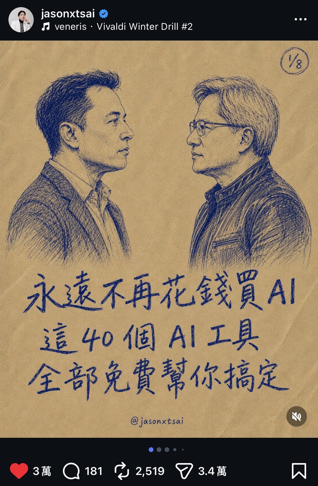
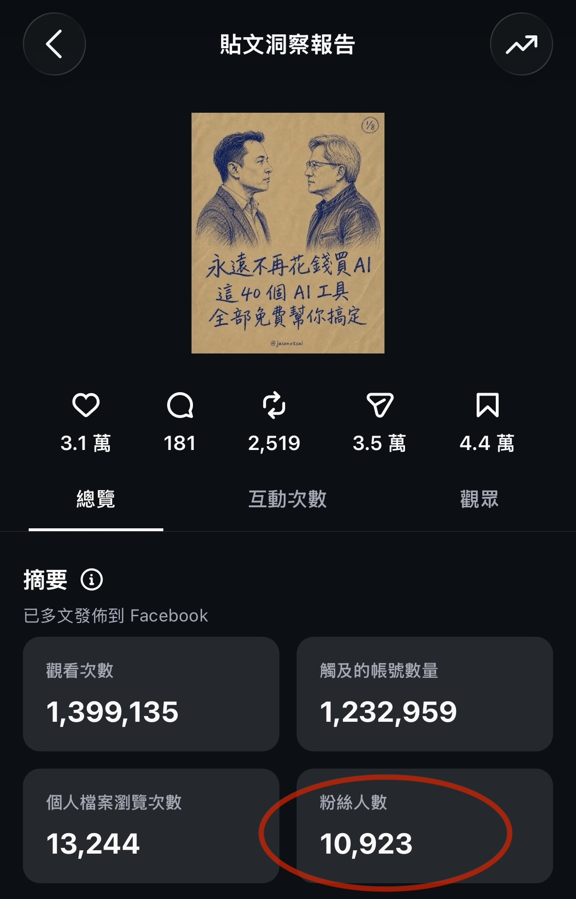
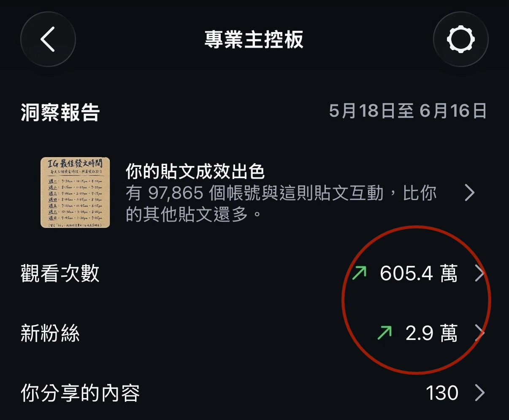

AI Workflow
#輪播工作流內訓
AI WORKFLOW · TEAM TRAINING
AI ×
輪播貼文工作流
把 AI 放進團隊的內容生產流程
AI Workflow
#輪播工作流內訓
WHY
不是每個人都要變成 AI 專家
但團隊一定要
先熟悉它
2022 底 ChatGPT 出現後，我就開始要求團隊把 AI 放進日常工作
那時候不確定它會走多快，但很確定一件事：不先熟悉，未來一定落後
ChatGPT
AI Workflow
#輪播工作流內訓
AI 正從「回答問題」
走向「執行任務」
01
第一階段：幫人回答問題
你問它、它答你，幫你整理資料、產出初稿
02
第二階段：幫人完成任務
Agent 類工具出現，AI 開始能串接工具、執行整段流程
03
現在：放進團隊的工作流程
從單點工具，變成可複製的內容產出方式
AI Workflow
#輪播工作流內訓
TODAY
今天，只聚焦
一件事
用 AI 跑完一篇
輪播貼文
更快 · 更標準 · 更容易複製
AI Workflow
#輪播工作流內訓



本月成績 · THIS MONTH
這個月
做出的
成果
用這套工具，一個月內實際產出的輪播內容與成效
AI Workflow
#輪播工作流內訓
整套流程，
三張圖
先看完
01 · 設定
建立 IP × 選視覺
告訴它你是誰、選一種視覺風格
02 · 生成
選格式 × 出內容
判斷類型、套骨架，先出純文字稿
03 · 輸出
HTML × 下載 / 複製
互動預覽、下載 PNG、複製 Caption
AI Workflow
#輪播工作流內訓
STEP 1
建立你的 IP
先回答
4 題
，記住你的口吻
Q1
你的帳號名稱是？你在幫誰解決什麼問題？
Q2
視覺偏 A 文字敘事型，還是 B 科技商業型？
Q3
主要 CTA 是讓人留言、收藏，還是換資源？
Q4
固定 Hashtag：每篇都會帶的 1–3 個分類標籤（可留空）
回答越詳細，文風越精準，之後都可隨時調整
AI Workflow
#輪播工作流內訓
STEP 1
固定顯示元素
三個元素，
設定一次永久使用
①
帳號 ID
就是 Q1 的 @帳號，自動帶到每張頁尾，不另外問
②
固定 Hashtag
指定 1–3 個分類標籤 → 顯示為封面小標籤；完整 hashtag 串放 Caption
③
頁碼
每張固定顯示右下角 0N / 總數，標準元素不需設定
AI Workflow
#輪播工作流內訓
STEP 2
選視覺模板
兩種模板，
選一個
就能開始
A 文字敘事型
純黑底 + 品牌橘
文字為主、大量留白
適合：個人故事 · 思維洞見 · 觀點
B 科技商業型
深藍黑 + 香檳金
圖表輔助、資料展示
適合：教學 · 商業知識 · 數據對比
AI Workflow
#輪播工作流內訓
STEP 3
選格式
收斂成
3 大類型
STORY
故事型
個人經歷 · 關係情感 · 轉折
封面
一句最痛的話，把人拉進情緒
起點
舊狀態或問題，讓人對號入座
轉折
故事的轉捩點，情緒翻面
洞見
從經歷提煉出的核心體會
CTA
情感收藏，或傳給想到的人
KNOWLEDGE
知識型
知識點 · 步驟 · 清單 · 數據
封面
強鉤子標題，點出痛點或好處
痛點
先講受眾現在卡在哪
框架
一句話講清楚核心解法
步驟
每張一個步驟，照著做到位
CTA
關鍵字＋行動，留言換資源
OPINION
觀點型
強烈論點 · 反直覺 · 對比 · 時事
封面
一句反直覺斷言，勾起好奇
換角度
把論點換個說法再講一次
論點
每張一個論點，可帶金句
收尾
總結立場，收束到 CTA
AI Workflow
#輪播工作流內訓
STEP 4
生成與輸出
先文字、
後加圖
01
先生成純文字版本，內容確認後再加圖
結構改起來比加圖後容易
02
輸出互動式 HTML 預覽
顯示元素沿用定位設定，不逐篇重問
03
圖片與文案都能帶走
逐張下載 PNG，Caption 旁有「複製整段」一鍵貼到 IG
要加底圖時：先把
背景圖裁成 4:5 比例
再給 Claude，不然套進卡片會變形
AI Workflow
#輪播工作流內訓
STEP 5
下載
下載 PNG，要在
本機開啟 HTML 檔
中才有效
在對話的預覽框裡點下載按鈕沒反應，是正常現象——把檔下載到本機，用 Chrome / Safari 開就會動
AI Workflow
#輪播工作流內訓
TOOL · DONE
照這套流程
輪播不用
從零動手
貼上工具 · 回答幾題 · 一條龍生成
AI Workflow
#輪播工作流內訓
輪播只是
起點
內容
往自媒體端
短影音腳本 · Threads · IG 貼文 · 內容月曆 · 私訊回覆 · 社群經營
企業
往公司內部端
資料整理 · SOP 產出 · 客服 · 業務流程 · 教育訓練 · 自動化 Agent · 系統導入
同一套「把 AI 放進流程」的思路，能延伸的不只內容
AI Workflow
#輪播工作流內訓
WHAT'S NEXT
今天這堂課
只是開始
真正的重點不是學會一個工具，而是開始想：公司裡有哪些工作，可以被 AI 重新整理成一套更有效率的流程
01
AI 課程
基礎 ＋ 自媒體應用
02
內容工作流導入
把這套流程接進你的團隊
03
企業內訓 × Agent
客製內訓與自動化導入
‹
›